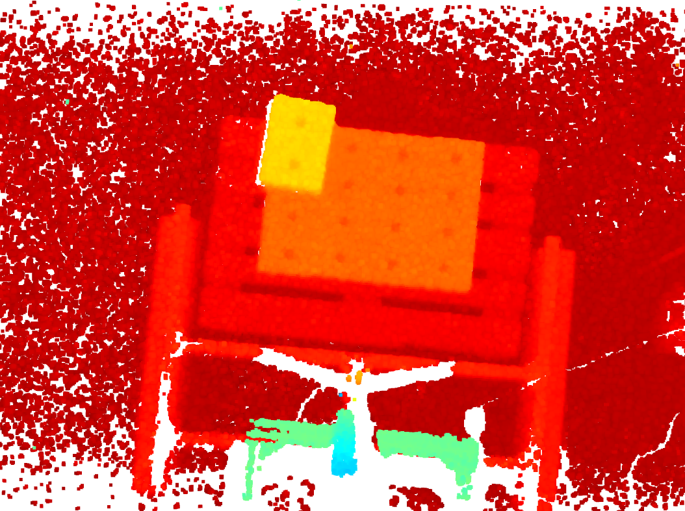
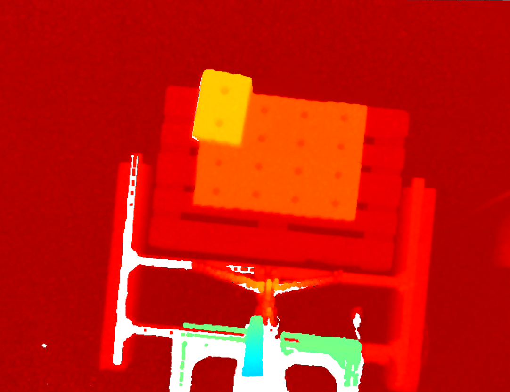
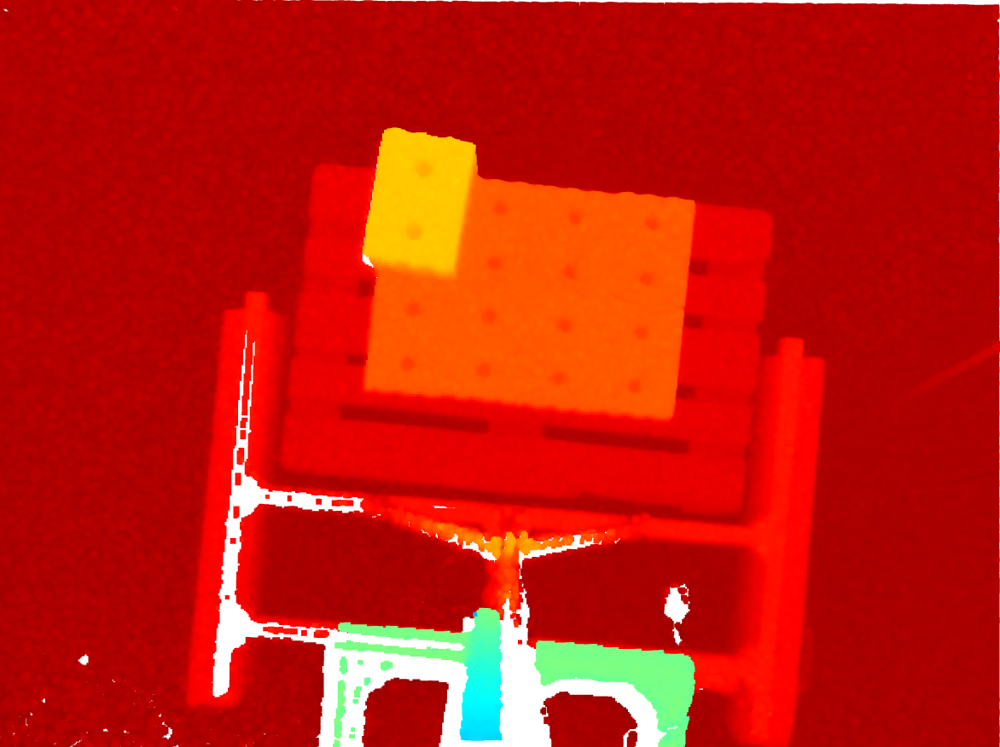
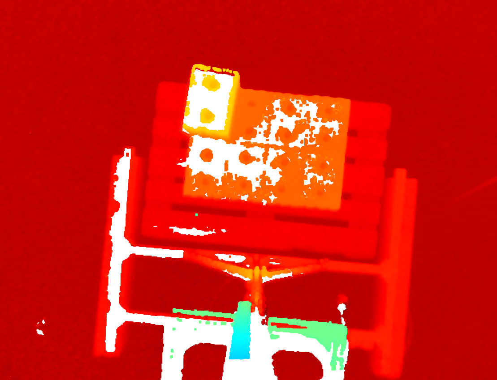

Evaluation Basler Blaze 101
Since the environmental conditions outdoor are highly dynamic, we need a suitable camera which can deal with the necessary requirements. As the camera which was used to develop the image processing is not usable outdoor, we needed to evaluate one that is claimed to be.
Therefore, this chapter will summarize some of the KPIs regarding the accuracy and the outdoor capability of the Basler Blaze 101.
Test setup
To evaluate and compare the capabilities of the Basler Blaze 101 side by side to the LucidVision Helios2, we 3D printed a custom camera holder.
{kind=link}
The camera holder was then mounted to a stand in order to be able to acquire images of pallets outdoor.
{kind=link}
Outdoor capabilities with varying conditions
- The camera was tested in varying conditions outdoor:
sun (65 kLux)
shadow ( 12,5 kLux)
sun with wet stones
The following images show the results in full sunshine with varying exposure times.

Sun - Exposure time: 100µs |

Sun - Exposure time: 250µs |

Sun - Exposure time: 400µs |

Sun - Exposure time: 500µs |
The results show, that a appropriate exposure time is needed in order to get usable images. But apart from that, it is surprising how well the camera works in full sunshine when operated correctly. Since we did not find a auto exposure feature on the camera itself, it might be needed to integrate that feature in the image processing scripts in the future.
The evaluation of the detection rate for differing stone types shows following results:
KS Quadro 115 |
KS Quadro 115 (wet) |
KS Quadro 175 |
100% |
97% |
100% |
KS Quadro 115 |
KS Quadro 175 |
100% |
100% |
The absolute detection rate is 318/319 stones. Additionally, we tested how and if the camera noise would affect the localization of the stones when taking the same image 10 times in a row. The following chart shows the mean standard deviation at different exposure times.
Mean standard deviation of stone localization in x and y coordinates. (source: own image)
Is the camera operated at a suitable exposure time, the cameras noise and thereby the deviation of the stone localization is negligible.
Furthermore we tested the close focus limit at which a stone can still be located. The test showed, that a reasonable limit is at approx. 37cm.
{kind=link}
With this very acceptable results, we come to the conclusion, that the Basler 101 could be usable in the highly dynamic environmental conditions of a construction site.